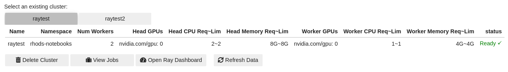

Jupyter UI Widgets
Below are some examples of the Jupyter UI Widgets that are included in the CodeFlare SDK.
Note
To use the widgets functionality you must be using the CodeFlare SDK in a Jupyter Notebook environment.
View Clusters UI Table
The View Clusters UI Table allows a user to see a list of Ray Clusters with information on their configuration including number of workers, CPU requests and limits along with the clusters status.
Above is a list of two Ray Clusters raytest and raytest2 each of
those headings is clickable and will update the table to view the
selected Cluster’s information. There are four buttons under the table
Cluster Down, View Jobs, Open Ray Dashboard, and Refresh Data. * The
Cluster Down button will delete the selected Cluster. * The
View Jobs button will try to open the Ray Dashboard’s Jobs view in a
Web Browser. The link will also be printed to the console. * The
Open Ray Dashboard button will try to open the Ray Dashboard view in
a Web Browser. The link will also be printed to the console. * The
Refresh Data button will refresh the list of RayClusters, the spec, and
the status of the Ray Cluster.
The UI Table can be viewed by calling the following function.
from codeflare_sdk import view_clusters
view_clusters() # Accepts namespace parameter but will try to gather the namespace from the current context